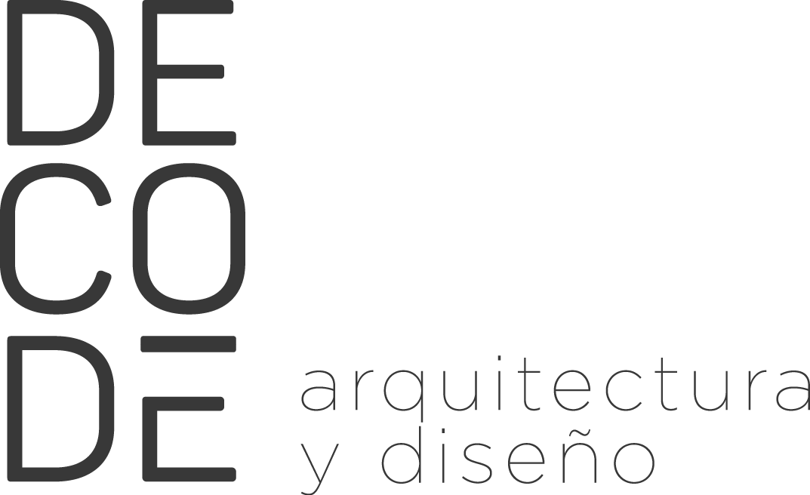
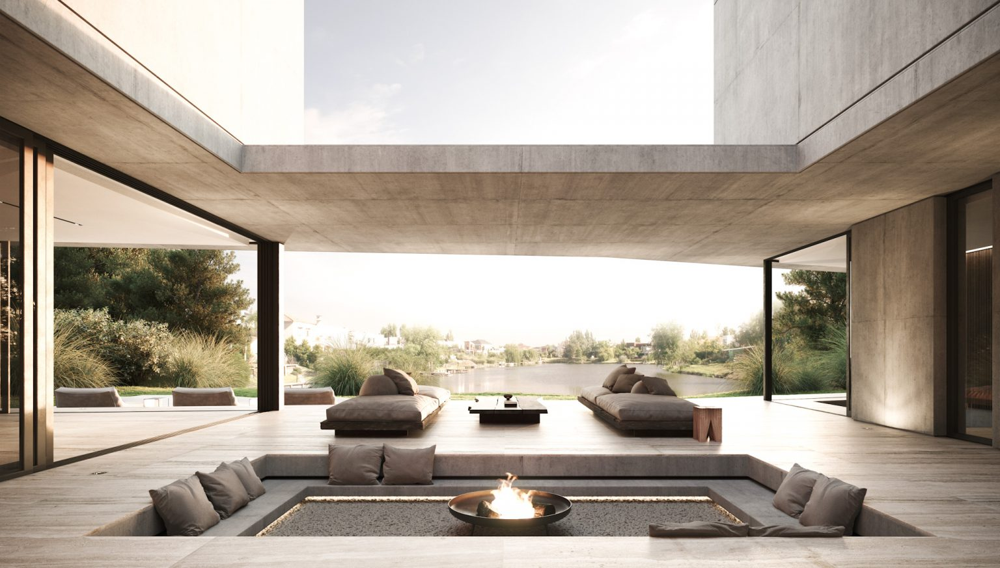

Decodificando personas a través de proyectos
Somos un estudio internacional que se destaca en el área de diseño. Nuestro equipo es joven, exigente y enfocado al diseño. Gracias al trabajo de todos mantenemos un nivel de servicio altamente personalizado durante todo el proceso de proyecto.
Cada proyecto se desarrolla a partir de los requisitos del cliente y la innovación emerge en el proceso de diseño haciendo que cada uno sea único. El contexto, los materiales y los detalles son nuestros pilares a la hora de diseñar. Las plantas contemporáneas de nuestras casas interpretan las nuevas maneras de vivir mezclando y organizando de forma moderna los espacios y sus relaciones.
Definimos nuestros proyectos como jóvenes, elegantes, sólidos, armoniosos e impactantes por su materialidad.
Santiago Zenteno
Santiago Zenteno se graduó como arquitecto en la Universidad Católica de Salta, Facultad de Arquitectura y Urbanismo.Desde el año 2020 que trabaja en varios proyectos junto a Saltapor, una de las empresas constructoras más grandes de Salta. Asimismo, colabora con grandes estudios de arquitectura desarrollando proyectos en el Dique Cabra Corral de Salta y en Vaca Muerta Provincia de Neuquén.